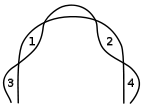
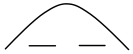

Беседа 2859 от 3877 · Беинса Дуно
Светлина, топлина, доброта
Отче наш.
„В начало бе Словото“.
Ще прочета няколко стиха от 5-та глава на Лука, от 5 до 10-и стих.
„Духът Божий“.
Понякой път има еднообразие в стремежите. Всичките хора имат един стремеж – да бъдат богати. Да бъдеш богат не е лошо, но когато богатството еднообразно иде в живота, тогава има разочарование.
Имате думите:
СВЕТЛИНА
ТОПЛИНА
ДОБРОТА
Какво отношение има между светлина, топлина и доброта? Светлината произвежда трептения в етера. Топлината в твърдите тела образува разширение. А добротата какво образува? Тя не се отнася до физическия свят. Там, дето хората са добри, може да ги познаеш по това, че градините са добре обработени. Човек, който е добър е добре облечен, добре вчесан. Този човек има добри обноски. Светлината се отнася до челото на човека, до неговия умствен свят. Топлината се отнася до неговото сърце, добротата се отнася до неговите постъпки. Следователно, ако вие разбирате светлината и не знаете как да я турите на работа, да ви помага на вашия ум, тогава вие не сте разбрали вътрешния смисъл на светлината. Ако вие си греете ръцете на топлината и не знаете да впрегнете на работа, вие ще изгубите едно от условията. Мекотата в живота не може да се внесе без топлина. Да образуваш един мек характер, мекотата е едно качество. Трябва ти топлина. Добротата е път, да ви доведе до Любовта. Добродетелта е среда на Любовта. Любовта не може да дойде без добротата. Ако си добър, Любовта ще се прояви в тебе. Вие сега разбирате добротата. Казвате: „Аз да стана добър“. Ти не може да станеш добър. Ако речеш ти да станеш добър, въпросът е за постъпките. Добротата е едно условие за да се прояви Любовта. Любовта, това е връзката, която ще ви свърже с Бога. А пък по-голямо благо от Любовта ти не може да намериш. И по-голямо нещастие не може да те сполети в света, ако изгубиш Любовта. Най-голямото нещастие е да изгубиш Любовта. Като изгубиш Любовта, ти ще намериш смъртта. Най-голямото благо е като намериш Любовта. Но сега така се говори. Любовта не може да се намери. Като че тя е нещо много малко, трябва да го търсиш някъде като игла. Но ти трябва да се поставиш в такова положение, че Любовта да те намери. Ако ти не се поставиш, значи Любовта не може да те намери, не може да се прояви. Ти не може да живееш в Любовта и да си нещастен. Запример, сега вие живеете във въздуха, но ако вас ви стегнат врата, тогава какво ще ви ползува този външен въздух? Отношението е такова: когато въздухът постоянно влиза и излиза из дробовете, се образува такова правилно отношение, тогава и Любовта, която влиза, постоянно функционира в душата. Сега светлината не може да се прояви, ако той няма едно добре оформено чело. Любовта не може добре да се прояви, ако човек няма добре оформени уста и постъпките на човека не могат да бъдат добри, ако той няма добре оформени ръце. Ръцете трябва да са добре оформени, за да може да се прояви. Казва: „С каквито и да е ръце“. Ти иди при коня, че го бутни за задните крака. На него ръцете ни най-малко не са оформени. Щом го бутнеш по задницата, рита. Иди при вола, волът в туй отношение (е) по-добър от коня. Неговото копито е разделено на две. Той със задницата не рита, но той боде. А пък човек, който има повече раздвояване, ръката показва, не е завършена. Значи човек само като си дигне ръката, ще знаеш какво ще говори неговият език. Или пък щом почнат да мърдат малко мускулите на устните, накрая ти вече може да знаеш какво ще каже.

Сега да дойдем до научната страна. Светлината не може да се прояви, ако нямаш едно добре оформено чело. Сега вие помислете. /Фиг. 1/ За ученият човек това много значи. За онзи, който нищо не знае, не разбира, нищо не значи. Ако тия места на една глава са вглъбнати, този човек не знае какво нещо е справедливост, не знае какво нещо е доброта. И Божественият свят малко разбира. Почти безсъвестен човек е. Малко нещо възприема от Божественото. /3/ – Това показва голям егоизъм у човека. 3 и 4 са отрицателни качества, а 1 и 2 – положителни качества. И положителните качества може да го тикнат в много престъпления. Тази част, 1 и 2 е деформирана, защото челото е без основи. Малко светлина има. Следователно, да се развие човешката съвест, трябва светлина. За да се развие човешката мекота, непременно трябва топлина. За да се развие милосърдието на човека отпреде, трябва му топлина. За да се прояви неговата добрина, трябва му справедливост. Следователно, като държите ръцете си една върху друга сплеснати, вие не знаете какво да правите. Много неестествено. Човек някой път, и вие пипате ръцете. Ако постоянно ти гладиш ръката отгоре, ти по този начин може да укротяваш мъжкия принцип в себе си – туй грубото, което действува да се прояви. Когато гладиш отдолу ръката си, укротяваш жената в себе си женският принцип. Някой път, когато жената е възбудена, ще гладиш долната част. Възбуден е женският принцип в тебе. Чувствата, жената дошла. Сърцето ти е възбудено. За да укротиш сърцето, от долната страна ще гладиш ръката си. Сърцето има две страни. Лявата страна на сърцето и дясната страна. Казвате: „Като се глади, какво ще се постигне?“ Като говориш, какво ще се постигне с говоренето? Ако говориш и не знаеш какво говориш и как да говориш, може да ти пукнат главата, може да ти счупят и краката, всичко може да стане. Ако говориш добре, хората ще те посрещнат, ще те обичат, ще те целуват. Каквото и да правиш, ти трябва да знаеш как да огъваш езика си наляво и надясно. Цяло изкуство е човек да говори. Ако вие знаехте науката за говоренето, пък то зависи от езика. Хиляди и хиляди начини има да огъваш езика си. Някой казва: „Аз съм строг човек“. Не че си строг човек, но езика ти не може да се огъва. Някой път дебел станал езика ти, реже като нож. – „Аз, казваш, аз съм много праволинеен“. Какво значи праволинеен? Ти, за да накажеш един човек, ще му кажеш че е лош. Ти, за да го накажеш, покажи своята най-голяма доброта. Когато той кръвно ти е обиден, покажи му добротата. Точно противното на обидата. Той сам ще се съди. Ако ти станеш като него, той те ритне веднъж, ти го ритнеш два пъти, тогава по какво се отличавате? Той е един път кон, ти си два пъти кон. Кон, аз вземам от думата „конт“ – значи голямо нещо. Малко изменение на буквите. Конят аз го вземам като емблема на човешкия ум, на нисшия ум на човека. Ум на постоянни промени. Той мяза на месечината. Месечовите хора, всеки месец по 4 пъти се менят. Гледаш го малък станал, след туй, голям станал. После започва пак да се смалява, малък става. Хора, които мязат на месечината, не може да разчиташ на тях. Каквото обещаят, една четвърт изпълняват. В месеца ще го намериш два пъти да изпълни туй, което каже. Другите 26 деня каквото каже, няма да го направи. Само 2 деня каквото каже ще направи. Щом не прави това, което казва, той се намира в 26-те деня. Естеството му е такова. Не може да кажеш на месечината да бъде постоянно пълна. Не може да остане. Тя като се разгневи, скрие се, не се показва. След туй, затъжи се и пак се покаже. Някой път като се разсърди, никого не иска да гледа. Влюбените хора много се сърдят. Като се разсърди някой, който обича някого, казва: „Няма да го гледам“. После, трябва една малка светлинка само да го зърне. Най-първо ще видиш младата мома, погледне го и след туй се оттегли. После, колкото се увеличават чувствата, завесата започва да се оттегля и най-после цялата завеса се оттегли, месечината е пълна. И пак започне да се тегли завесата. В туй всички имате опитност. Понеже не знаете произхода ѝ, казвате: Господ направил така. Казвате: „Защо ме е направил Господ такъв?“ Господ те е направил такъв, понеже ти не използува светлината. Ако грешиш в ума си, малко светлина имаш, ако грешиш в сърцето си, малко топлина имаш. Ако грешиш във волята си и не знаеш как да постъпваш, малко доброта имаш. Добротата, това е вашият капитал, „аржан конте“. Това е капиталът в обръщение – златото. Ако ти си добър, ти си финансист. Ако не си добър, никакъв финансист не си. Всичките ти работи ще бъдат объркани. Един човек, който е добър, държавата му е добре устроена. Значи сърцето му се намира в добро положение. Той всичко може да направи. Щом не си добър… Доброто е кръвообръщението на човека. Казвате: „Защо трябва да бъда добър?“ Ако в тебе кръвообръщението и дишането не стават правилно, ти си осъден, никакво постижение не може да имаш.
Та казвам: Постижението е светлината. Светлината, свържете я с нашия ум. Топлината е свързана с нашите чувства. Доброто е свързано с физическия ви живот. И тогава може да имате въпрос за постижения. Понякой път вие искате да ви обичат хората. Ти не може да обичаш един човек с тънки устни като косъм. Ти не може да обичаш един човек, който има сплеснат нос като човката на някоя сврака.

Не може да обичаш който има чело сплеснато като триъгълник нагоре – /Фиг. 2./. Всяка линия в природата тя си има своя ценност. Някой път може да изгубите вашата ценност. Ако загубите този завой на ноздрите, ще изгубиш здравето. Щом носът се разширява, човек придобива топлина. Долната част показва на носа, каква част от тази топлина е употребена за строежа на чувствата. Чувствата трябва да се строят, да се организират. Ако вие, вашите чувства не ги държите в изправност, те може да се разстроят, както едно пиано се разстройва. Казвам: Всеки един от вас трябва да си има огледало, да се наблюдава. Толкоз години работите, като живеете 50–60 години, турете си една задача да изправите носа. Някой от вас има вглъбнат нос. На някой носът е изпъкнал, а на някои носът е закривен. Ако носът отдолу ти е закривен, ти ще станеш песимист. Ако е изпъкнал на средата ще станеш. Ако е вглъбнат, ще бъдеш любопитен. Ще искаш да знаеш къде какво е станало, там, дето не ти трябва. Това са общи работи, аз ги давам за стимул. Понякой път вие седите, гладите си челото и казвате, че някой иска да пее. За да пее, той трябва да знае как да постъпва. Ако искаш да бъдеш математик, трябва да знаеш как да постъпиш. Ако не знаеш къде да буташ челото си, ти математик не може да станеш. Ако не знаеш къде да се буташ, ти певец не може да станеш. Онзи, който иска да стане певец да знаеш как да буташ гърлото си. Запример, ако аз искам да дам една чувствителност на своя тон, на гласа си, щях да хвана гърлото си (с) показалеца. Ако искам да дам благородно изражение, с показалеца си ще пипна гърлото. Ако искаш да предадеш всичките тия качества, тогава с цялата ръка, с всичките си пръсти ще пипам ларингса. Сега вие като ме слушате, ще помислите, че като се пипнете, изведнъж ще стане. Много разочарования ще имате. Пазете се от раздвояване. Щом има раздвояване в чувствата, нищо не се постига. Всяко раздвояване в съзнанието на човека, в науката или в изкуството, или в светлината, за постижението, раздвояването трябва да изчезне. „Двоеумният човек е непостоянен във всичките си пътища.“ Туй раздвояване на съзнанието трябва да изчезне. Мислиш, че си добър. Казваш: „Добър съм, ама не съм“. – Раздвояваш се. – „Дали ще стане нещо от мене?“ Казваш си: „Я стане, я не“. – Раздвояваш се. Ще кажеш: „От мене човек ще стане, понеже Бог ме е направил човек да стана. Ако аз не стана, горко ми. Причината е в мене, не в Бога“. Слънцето изгрява за теб. Като изгрее слънцето, трябва да мислиш. А на обед като напече, казва: „Работете върху чувствата си“. Като изгладнееш, казва: „Бъдете добри“. Като дойдат гладните години, гладът идва, за да накара хората да бъдат добри. Когато гладува и жадува, тогава човек може да придобие онова възвишеното и благородното. Казвате: „Защо Господ ми е дал този глад?“ Гладът е онази мощната сила, която те кара да придобиваш благородното и възвишеното. Вие се спирате и казвате: „Толкоз години вярваме“. Вие седите и вярвате, чакате този билет, който сте взели от лотарията да спечели. Без много работа. Хубави са лотариите, но лотарията е за хора, които нямат работа. Лотарията е за безработните хора, а онези, които може да работят не им трябва лотария. Цигуларят, който знае да свири хубаво, той не трябва да взима лотарийни билети, но да вземе цигулката и да свири. Певецът, който има хубав глас – да пее, не му трябва лотариен билет. Художникът, който има отлична ръка – да рисува, не му трябва лотариен билет, но да вземе да рисува. Човек, който е добър, не му трябва лотариен билет, но да иде да прави добро. Да иде да намери някоя богата нива, да направи добро и тази богата нива ще ти даде всичката мазнина, която ти трябва.
Та казвам: Вие живеете в светлината и казвате – „Много светло е. Много топло е“. Казвате после: „Не си струва човек да бъде много добър“. Вие още не сте дошли до крайния предел. Трябва да имате един термометър, да определите степента на добротата си. В Китай имало един китаец – много добър. Той имал един противник, и той искал да бъде добър като него. Един ден се намерил един шегобиец. Той ходил при добрия човек 19 пъти и той все му услужвал, а онзи, който искал да му подражава, и той да бъде добър като него, като отишъл при него 5 пъти, той му казал: „Прекали го. Веднъж, два пъти, но 5 пъти?“ Той му казал: „Не може да достигнеш онзи. При него аз 19 пъти ходих и той не е показал ни най-малко недоволство“. Казвам: Вие искате да бъдете музиканти. Ако на 5-ия път вие се обезсърчите, слаба ви е музиката. Ако говорите и на 5-я път вие се обезсърдчите слаба ви е Любовта. Никога не се обезсърчавай. Мнозина от вас носите старите аристократически схващания. Например, схващането, че има аристократическа кръв. Аристократическа кръв е, която има изобилно светлина. Аристократическа кръв е, която има изобилно топлина. За мене аристократическа кръв е, която съдържа сгъстена светлина, сгъстена топлина и сгъстена доброта. Тя е аристократическа кръв. И тогава желая да имате всички сгъстена светлина в себе си. Та сега новото учение най-първо иде да разшири челата ви, да ги оформи малко. Новото учение иде да оформи вашите носове. Ако се оформи добре носа ви, ако се оформи добре лицето ви и ако се оформи добре вашата ръка, ще се прояви доброто във вас.
Та казвам: Не отказвайте да направите едно добро на когото и да е. Някой казва: „Аз не зная как да направя едно добро“. Ако вечерно време легнеш, че ти дойде на ум да направиш добро, да донесеш вода някому – стани, иди, донеси една стомна вода! Полей някое цвете, ти си направил едно добро. Ако усетиш желание, полей друго цвете. Вечерно време в тъмното иди, полей и легни спокойно, че си направил добро на някое растение, на някое плодно дърво. Ще кажеш: „Не намерих нито един добър човек, комуто да направя добро“. Може да направиш добро на малкия си пръст. Малкият пръст те боли. Господ казва: Направи нещо, вземи, поглади го, понамажи го със зехтин. Прочети му една молитва. Кажи: „Господи, помогни на малкото ми пръстче, което ме боли“. Като си легнеш, да знаеш, че си направил едно добро. Ти сега ще кажеш: „Е, ще се моля за малкия си пръст!“ Вие не разбирате. За малките работи се молим. Човек, който има големи работи, той не се моли. Имайте във вас желание да измените вашия нос. Да кажем, вие сте станали гневен. Какво показва гневът в човека? Гневът не е лош. Имате излишен капитал, трябва да го превърнете. Гневът да го превърнете в енергия. Като си гневен, влюби се. Който се гневи, да се влюби. Щом се разгневиш, влюби се в някого. Или щом се разгневиш, ще ви дам един метод какво да правите, да разберете какво разбирам „влюбване“. Ако е лятно време, имате хубави череши, круши, ябълки. Щом се разгневиш, нападни черешите, нападни крушите. Щом крушата влезе в тебе, щом ябълката влезе в тебе, веднага гневът ще се превърне в една светлина. Някой път казваш: „Такъв ми е темперамента“. Темпераментът е едно състояние на човека за да се прояви той. Да кажем, вие сте сангвиничен темперамент. Сангвиничният темперамент има предвид да развива дробовете. Умственият темперамент има за задача да урегулира нервната система. Холеричният темперамент има за задача да урегулира вътрешната сила у човека, динамическата сила. Флегматичният темперамент има за задача да уравновеси. Ти като се безпокоиш, казвам: Тури малко ще се уреди. Казвате, че англичаните са флегматични. Не са флегматични. Англичанинът при дадени условия е флегматичен, но са много енергични. Те са горделив, честолюбив народ са. Той няма да се възбуди. Ако го обидиш, той ще се дуелира с вас. Започнат двамата, ще се набият, след туй си хванат ръцете. На единият – шапката смачкана, на другия главата сплескана и след туй станат приятели. Казват: „Ти си глупав и аз съм глупав“. Та аз ви казвам: Като се биете, поне боксирайте се. Ръкувайте се. Щом те набие някой, що ще ходиш да се сърдиш. Две сестри се карат. Удари я в носа, после в ухото, после в челото – да мисли. Удари я после по бузата, по брадата – да прави добро. Удари я в челото – да има светлина. Удари я в носа, да има топлина. Удари я по брадата, да има добро.
Казвам: Новото Учение в света има една велика задача – да извършим нещата с най-малко разноски. Първото нещо, турете в ума си. Вие казвате: „Какво ще правим, остаряхме“. Остарели сте! Тамън сте хора. Стари хора търсим. Младите да пъплят. Възрастните да работят, а старите да учат. Онези от вас, които сте млади, да пъплят. Онези, които са възмъжали, да работят, а старите да се учат. Всичките стари хора буквари да имат. Учение от тях се изисква. За старите, за вас са тия работи. Вие като учите, ще разсъждавате. Другояче, вие очаквате да умрете, да идете в оня свят. Вие си представяте оня свят такъв, какъвто не е. Ангелите са заети с една свещена работа. Всеки ангел е занят, няма време. Неговото съзнание е заето, не може да се занимава с маловажни работи. Казвам: И вие не се занимавайте с маловажни работи, че този е лош, онзи е лош. Лошите хора са по-добри хора. Добрите хора са по-лоши хора. Лошите хора са по-добри, понеже създават условие за доброто, а пък много добрите хора създават една ревност. Другите хора искат да станат като тях. Казва: „Преструва се“. И те критикува. Като види, че е много добър, казва: „Не е много добър този човек“ – значи в неговия ум ще влезе една лоша мисъл, че е лъжец, че е лицемер. А като види един лош човек, започва да се предпазва, да не би да ти каже нещо, да не би да те набие, ставаш внимателен, учител е той. Казвате: „Защо са лошите хора?“ Учители са те. В думата „лош“ вие имате едно значение. Лошото в тая дума се крие в буквата „ш“. Лошият човек ще те храни по 4–5 пъти, ще те облича. Българският селянин по 4–5 пъти храни свинята, но като дойде Коледа изведе свинята из кочината, казва: „Стига толкоз“. Пресече ѝ гърлото. След туй се чува вика на свинята, която квичи. Казвам: Всеки, който яде по 5 пъти на ден, той ще плати за това ядене. Толкоз време са те хранили, ще платиш. Насила се взема платата от нея. Та сега живота другояче разглеждайте. Вие не очаквайте да влезете в света и да ви посрещнат. Светът никога няма да ви посрещне. Всичките хора са заети. Онази, красивата мома не е заета с тебе. Тя е заета със своята красота, с прическата, с роклите си, иска да излезе, да се покаже. Тя ще иде пред огледалото, ще се оглежда. Ако ти очакваш нещо от красивата мома, лъжеш се. Какъв превод ще дадете? Грозният, ако иде при красивият, на нему ще му стане приятно. Красивите хора обичат да виждат грозните хора. Той като го погледне, радва се. Грозният ще започне да се измъчва, да се пържи, а красивият ще му стане приятно. Тогава добрият човек е красив, а грешният е грозен. Затуй грешният при добрият се мъчи. Добрият като гледа, казва: „Той е един грешник“. Туй е разумното в света. Сега на вас, които сте грозни, вашата грозота е или в челото, или в носа, или в ръцете. Ако сте добри, де седи добрината ви? Във вашето чело, във вашия нос, във вашите ръце. Ако имате хубаво чело, благодарете на Бога за челото си, благодарете на Бога за носа си, благодарете на Бога за ръцете си. Ако челото ви не е добро, заемете се да работите за челото. Уредете го. Всичките усилия турете на вашите чувства. Всеки ден турете си един идеал в ума. Какъв трябва да бъде носа? Начертайте го. Желай да имаш такъв нос. Може да имаш такъв нос, какъвто искаш. Трябва най-малко 4–5 години да мислиш да имаш прав нос; 4–5 години – да имаш хубав нос. Нарисувай го. Ако не го нарисуваш, носът ви ще стане такъв, какъвто не трябва.
Казвам: Ако вие бихте работили по тази система, знаете ли какви щяхте да бъдете? Какви лица щяхте да имате! Това е наука. Работите ли, ще кажете: „Ето нашето учение. Виж какво чело направи? Туй учение, в което ходя, преобразява носовете, преобразява лицата, преобразява ръцете. То внася светлина, топлина и доброта в нас. Животът ни се осмисля“. Отсега нататък за старите настава време за учение. За възрастните отсега нататък настава време за работа, а отсега нататък за децата настава време за пъплене.
Започнете с пъпленето. Започнете с работата и свършете с учението.
Добрата молитва.
XVII година.
37 лекция на Общия окултен клас,
държана от Учителя на 6 юли 1938 г., сряда, 5 ч. с.
София – Изгрев.